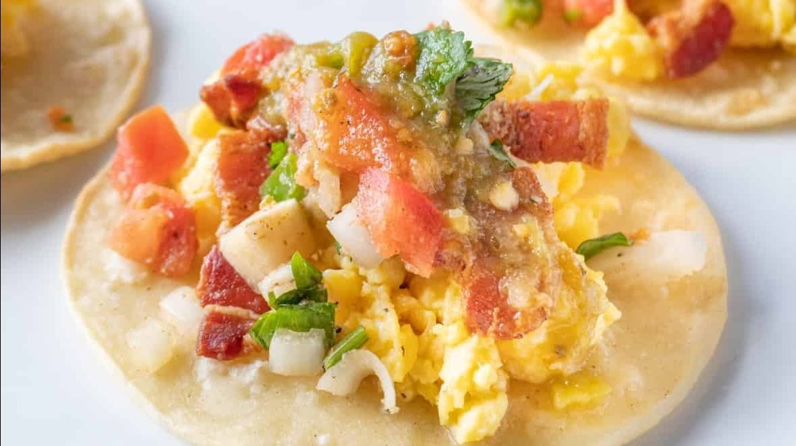

Quick and Delicious Breakfast Tacos
A Fast and Tasty Breakfast to Start Your Day!
Ingredients:
- 4 oz bacon
- 6 eggs
- 2 tsps butter
- 1/4 teaspoon salt
- 1/4 teasoiib garlic powder
- 9 mini or 6 regular corn tortillas
- Oil for frying tortillas
Optional Toppings:
- Pico de Gallo
- Salsa Verde
- Hot Sauce
- Avovado
- Cilantro
- Onion
- Cheese
Instructions:
- If making pico or salsa verde make that first the set aside.
- Cook bacon in oven or fry on top of the stove then crumble. If frying, it is better to cut bacon into small pieces beforehand. When finished cooking and cooled enough to handle chop into pieces.
- Heat 1-2 tbs of oil in fry pan and fry tortillas until lightly brown.
- Whisk eggs, salt, and garlic powder. In a cold nonstick pan add the butter and whisked eggs. Turn heat to medium and whisk continuously until eggs are cooked.
- Fill taco shells with egg, add crumbled bacon, and any other toppings. Enjoy!
- Pico de Gallo
- 4 oz bacon
- Oil for frying and 9 mini/6 normal corn tortillas
- 6 eggs, 1/4 teaspoon salt, 1/4 teaspoon garlic powder, 2 tsps butter
- Salsa Verde, Hot Sauce, Avocado, Cilantro, Onion, Cheese